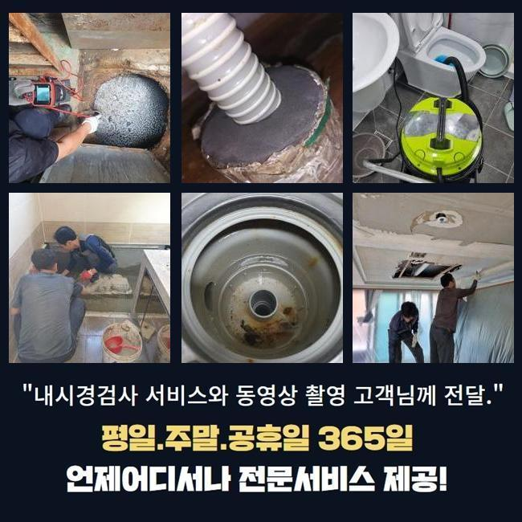
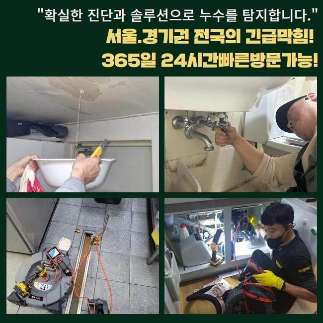
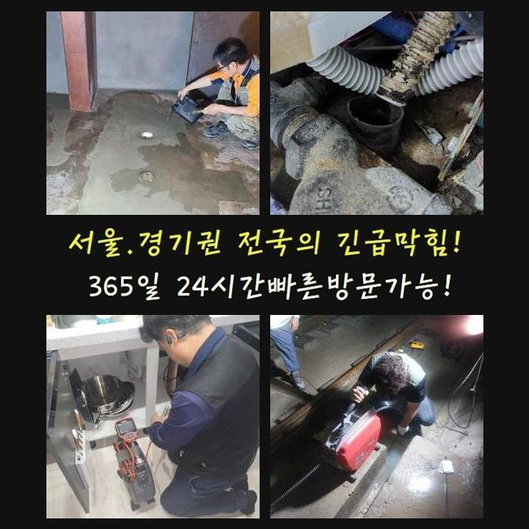
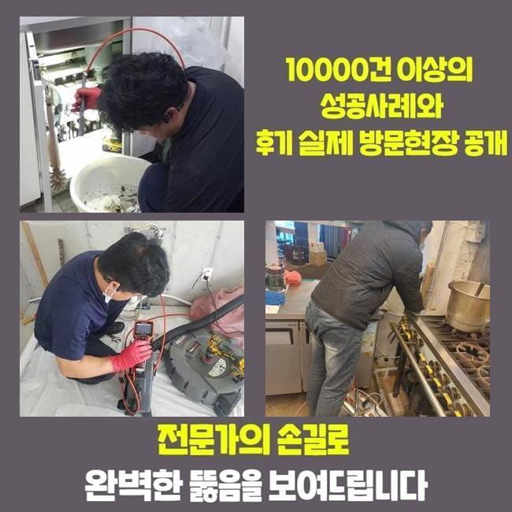
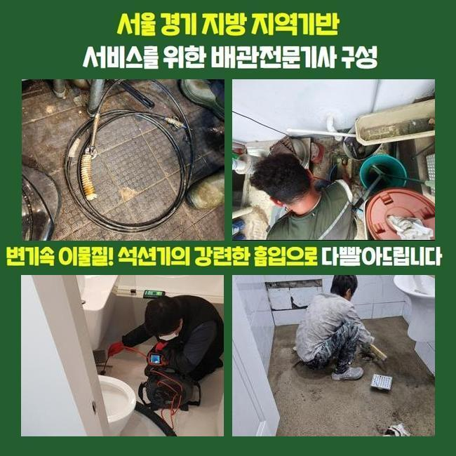
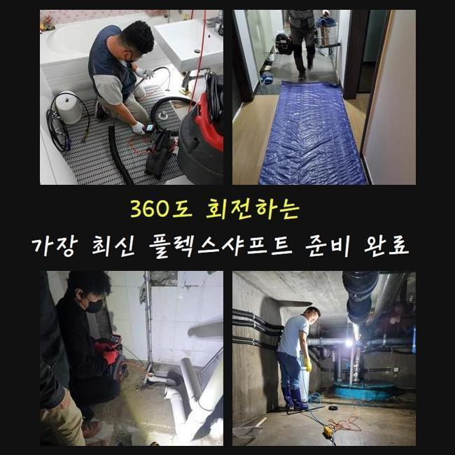

🏠 수원 남향동욕실역류 고등동 오수맨홀청소 누수공사
수원 싱크대막힘 전문 시공 후기

📋 작업 개요
- 위치: 수원
- 서비스 유형: 싱크대막힘, 배관막힘, 맨홀막힘, 누수수리, 역류해결, 뚫는업체, 배관청소, 설비공사
- 작업 일시: 2025. 2. 14. 16:53
- 업체명: 하수구수사대 (010-5615-2118)
🔍 문제 상황
수원 남향동욕실역류 고등동 오수맨홀청소 누수공사
며칠전 상가내부의 개수대에서 야기된 막힘문제를 타파한 사례를 설명드리겠습니다
어렵지않고 참고할만한 사항이 상당하니 주목해주세요!
탕비실이란 장소에서 생겨난 일이다 보니 셀프조치로 시정하려는 흔적들이 남아있었습니다
전문인은 대응방법들을 어떤수순으로 이행하는지 또한 배관을 유지시키는 꿀팁도 어렵지않게 설명할게요!
의뢰인은 근무하실때 조리를 위한 목적이 아니였어서 막혀버리는 문제들이 없을것이라 생각했다고 말하셨어요
이곳의 경우 식자재들을 사용안하는 곳이기에 철저히 청소들이 결여된 현장이 많아요
저희전문진은 장치를 준비시켜 출동했죠 도착하여 각 관로들을 체크해봤죠
이곳저곳 관찰하니 고여있는 모습은 보이지않았으나 느리게 흐르고 있었어요
이럴땐 예고없이 압이 올라가고 역류되는 현상들이 나타날 가능성이 높습니다

🔎 원인 분석
💡 전문가 진단: 정밀 진단 장비를 사용하여 슬러지의 고착 여부를 판명하고 타격/세척 작업을 실시했습니다.
우선은 석션기기라는 기기를 운용하여 입구 근처의 오수들을 제거해주었습니다
석션도구는 진단전에 깨끗한 시야를 위하여 이용되고 작은 잔해를 제거할때 훌륭한 기능들을 뽐내고 있어요
석션기기에 오수와 이물이 흡입됐으나 아직도 더디게 내려갔어요
석션기기의 가용 이후에는 내시경도구로 하수관을 체크했죠
내시경케이블을 삽입해보니 슬러지들이 축적되어 배관구경이 협소하게 되었는데요
요리를 할 수 없는 곳인데 어째서 이물들이 축적되었나 의구심이 드시겠지만 다중 이용 시설은 신경쓰고 청소들이 간과되는 사안이 많아서입니다
그렇기때문에 주전부리 및 커피찌꺼기라던지 기름이 흡착되어 고착물들을 만듭니다
내시경기기로 싱크대쪽을 확인하며 샤프트장치로 흡착물들을 타격하며 점진적으로 배수관을 청소하니 공간이 생기며 통로들이 넓어졌어요
기름의 경우엔 내시경에서 빨간 색깔을 띄므로 이물이 제거된다면 깨끗하게 탈바꿈되는것을 목격하게 된답니다
샤프트운용을 해주었지만 물이 그럼에도 수월하게 배출되지 못하는 문제들이 남아있었습니다
그렇기때문에 수도들을 가득 받아 테스트 삼아 흐르게하니 특정한 위치에서 고여서 막히게되는 결함이 잔존해있는 상태였습니다

🔧 작업 과정
오수들이 고인 상태라는건 놓치게된 요소들이 존재한다는 것을 방증하는것이죠
이물질외에 심각한 원인이 아직 있을거라는 걸 보여주는것이기에 집수시설까지 확인할 여지가 충분했죠
저희의전문가는 오랫동안 이어진 씽크대막힘의 까닭들을 찾고자 내시경 선을 깊숙한 지점으로 투입시켰습니다
마침내 새로 안 사실은 관로의 특정부분이 하단부에 매립되어 있지 못하고 바깥부분으로 노출이되어 설치됐다는 사실이었죠
내부에서 내시경으로 관찰하는게 힘들어 바깥에서부터 역순으로 투입시킬 수 있게 특정부분을 뚫은뒤 그 부위에 내시경 내시경 라인을 넣어주었죠
내시경 라인을 넣어보니 이물들로 막히게된 지점을 발견했습니다
사무실에서부터 하수라인이 붙어있던 모습이 아니였고 다른 배수관이 외측으로 붙어있던 모습이였습니다
해당 하수관을 따라가니 세면대배수관에 사이즈가 컸던 오염물이 하수관을 가로막아섰죠
주방의 관로가 아닌 뜻밖의 장소에 형체를 알 수 없는 것이 존재해서 찾아내는데 고충을 겪었지만 결국 계속적인 막히는 문제의 주된 까닭들을 발견해냈죠
수회에 걸쳐 포인트를 확인해보고 점검해야하는 지점의 하수관을 타공작업해주어 폐기물을 배출해주었는데요
빼보았더니 둥근 호환이 안되는 배수캡으로 파악했는데 어째서 빠지게된건지 알 수 없었지만 사이즈가 컸으며 특정 구간에 놓인 모습이라면 통수되는것이 불가한 이물질이였습니다
씽크대라인의 배수관과 정체들을 유발시키는 이물질들도 없애주는 수순을 완료하니 배수과정이 원활하게 되면서 수리들이 끝나게되었어요
더불어 고객님은 악취문제도 문의하셨어요 저희들이 느꼈지만 냄새들도 생겨난걸 확인했어요
트랩쪽에 균열들이 보였는데요 배수관부터 정리한 후 새것으로 교체도 오차없이 해드렸습니다
최종적인 검수를 실시해보고자 탕비실쪽으로 가 개수대에 물들을 채워서 잘 내려가는지 보았더니 이전과 달리 답답함 없이 배출되었습니다
해당 현장의 배수관 관련 증세도 이상없이 수습되었어요


✅ 작업 완료
다행스럽게도 결국에는 문제의 까닭을 추적하여 결국 막힌 까닭들을 발견하게되었고 시설물 이용도 제한이 없어지게 되었습니다
위같이 고객이 사용하는 때에 고생하시지않게 배수정체 시정을 완료시켰습니다
사용하실때 개수대에 오일들과 음식물들이 안빠지게 주의해야하고 점검도 때때로 진행해주시면 좋습니다
저희업체는 재발되지 않는 작업수순에 집중합니다 이에 작업하면서 작업들을 끝내고 청소해준 부분에서 재발된다면 무상정책으로 as들도 실시합니다
배수관이 막혀 전문진의 출장을 고려하는 중이시라면 저희전문진에게 연락하시는건 좋은 선택이 될 것입니다!



⚠️ 베란다 누수 및 방수 관리 방법
- ✅ 비가 많이 올 때 창틀 주변이나 아래층 천장에 얼룩이 생기는지 정기적으로 확인해 보세요.
- ✅ 우수관 주변 실리콘 마감이 들뜨거나 깨진 틈새가 있는지 손상 여부를 수시로 체크하세요.
- ✅ 베란다 바닥 타일의 줄눈(메지)이 소실되면 그 틈으로 물이 침투하여 누수가 유발됩니다.
- ✅ 누수 의심 증상 발견 시 방치하면 아래층 손실이 커지므로 즉시 전문가의 진단을 받으십시오.
💡 핵심 정리
- 확실한 장비 작업(내시경 점검 및 샤프트 스케일링)으로 원인을 뿌리 뽑습니다.
- 작업 후 1년 이내에 동일한 부위 재발 시 100% 무상 A/S 서비스를 보장합니다.
- 서울 · 경기 · 인천 전 지역에 24시간 언제든 긴급 출동할 수 있도록 항시 대기 중입니다.
❓ 자주 묻는 질문 (FAQ)
🚨 수원 싱크대막힘 문제로 고민이신가요?
정확한 원인 진단과 확실한 시공으로 재발 없는 해결을 약속드립니다.
24시간 긴급 출동 | 서울 · 경기 · 인천 전지역 | 1년 내 재발 시 무상 A/S